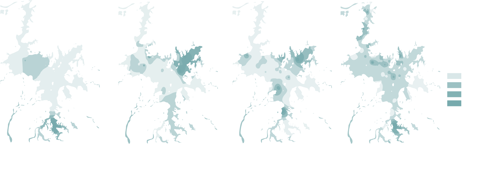

WETLAND HYPOTHESIS
This project focuses on the future tense of Poyang Lake's environment. There were many ecological desasters happend in Poyang Lake, like sand mining, blind reclamation. Severely affect the Oriental white storks' habitats. I assume that the Cyanobacteria will outbreak in the future. Due to other severe ecological issues, like sandmining, heavy fishing and farmland reclamation, the birds here is also decreasing. I tried to use a kind of installation to restore the environment and improve the revenue of the residents.

I mainly choose the Poyang Lake local vegetation to improve the environments. Apart from that we also consider the the economic effect the vegetation can provide. So I choose the reed to provide the farmers fiber for selling. I choosed the water hyacinth to use it to absorb the extra nitrogen and it can also be collected for the feed of livestock. I choosed the specific kinds of fish to eliminate the Cyanobacteria, at the same time, this fish can both be the food of bird and the revenue of the residents.